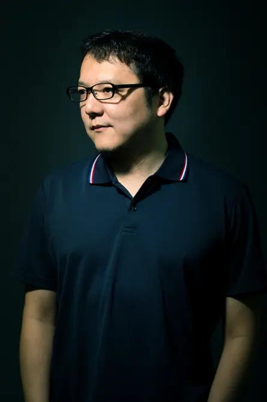
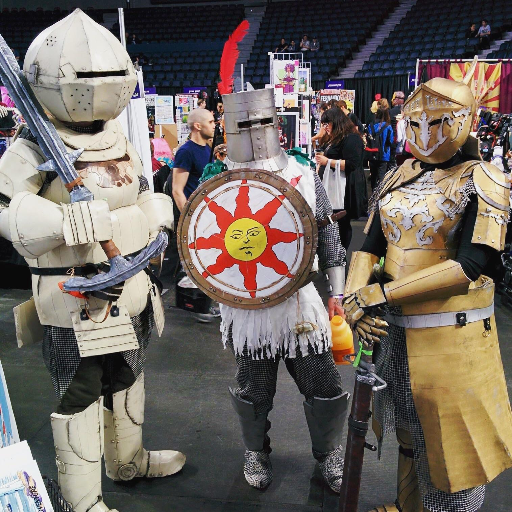
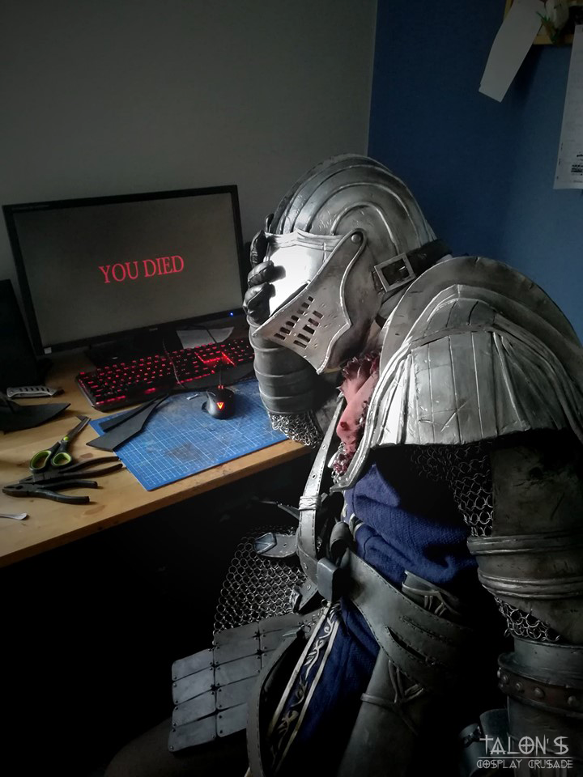

Kalkulačka duší
Celkem získáš: 5 000 duší
Odpočet do Vánoc
Načítám odpočet...
Vzkaz u ohniště (Soapstone)
„Praise the Sun! Nikdy se nevzdávej, nemrtvý.“
Co je
Dark Souls je série akčních her na hrdiny vytvořená Hidetaka Miyazaki z FromSoftware. Vydaný Bandai Namco Entertainment. Série začala vydáním Dark Souls (2011) a má dvě pokračování, Dark Souls II (2014) a Dark Souls III (2016). Dark Souls dostalo kritiku a uznání, s prvním titulem často citovaným jako jeden z největších ve videoherním průmyslu. Série je chválena i kritizována pro její vysokou obtížnost. Do roku 2022 se série prodalo přes 33 milionů kopií. Další hry FromSoftware, včetně hry Demon's Souls, Bloodborne, Sekiro a Elden Ring sdílejí několik souvisejících konceptů a jsou běžně seskupeny společně jako Soulsbornes.
Co je tak speciální

Hry se odehrávají v temném, středověkém fantasy prostředí, kde hráčská postava bojuje proti rytířům, drakům, fantomům, démonům a dalším monstrózním nebo nadpřirozeným entitám. Narůstání, ztráta a obnova duší jsou ústředním prvkem vyprávěním a hratelností her Dark Souls. Tyto hry jsou propojeny svým prostředím a zastřešujícím cyklickým vyprávěním soustředěným kolem ohně a jsou propojeny společnými tématy a prvky, včetně interakcí s fantomy a bitev s démony. Na konci každé hry mohou postavy znovu zažehnout „první plamen“ nebo jej nechat vyhasnout a opakovat volbu, kterou předtím učinili ostatní.
Hry Dark Souls se hrají z pohledu třetí osoby a zaměřují se na zkoumání vzájemně propojených prostředí a zároveň bojují s nepřáteli pomocí zbraní a magie. Hráči bojují s bossy, aby postupovali příběhem, a přitom interagují s nehratelnými postavami. Protagonista každé hry Dark Souls může mít různé pohlaví, vzhled, jméno a počáteční třídu prostřednictví tvorby postavy. Hráči si mohou vybrat mezi třídami, včetně rytířů, barbarů, zlodějů a mágů. Každá třída má své vlastní výchozí vybavení a schopnosti, které lze přizpůsobit zkušenostem a možnostem hráče, jak postupují. Hráč získává duše z herních bitev, které fungují jako zkušenostní body pro zvýšení úrovně a jako měna pro nákup předmětů. Získané duše jsou obvykle úměrné obtížnosti boje s určitými nepřáteli; čím těžší je nepřítel, tím více duší hráč získá jeho porážkou.
Popularita
Do roku 2022 se série prodalo přes 33 milionů kopií. Ostatní hry FromSoftware, včetně Demon's Souls, Bloodborne, Sekiro a Elden Ring, sdílejí několik souvisejících konceptů a jsou běžně seskupeny jako Soulsbornes.

Jedním ze základních mechanismů série je, že využívá smrt k tomu, aby hráče naučila, jak reagovat v nepřátelství prostředí, povzbuzující k opakování, učení se z minulých chyb a předchozí zkušenosti jako prostředek překonání jeho obtížnosti. Když hráči ztratí všechny své body zdraví a zemřou, ztratí své duše a jsou teleportováni zpět k ohni, kde naposledy odpočívali, který slouží jako kontrolní bod. Jedna šance je dana aby hráč získal zpět své ztracené duše v podobě krvavé skvrny, která je umístěna na místě nebo kolem něj naposledy zemřeli. Pokud hráč znovu zemře, než dosáhne své krvavé skvrny, duše jsou trvale pryč. Protože většina nepřátel se znovu objeví po smrti hráče, nebo pokud by měl hráč odpočívat u táboráku, hráč má možnost získat zpět více duší opakovanými bojovými střetnutími.

Oheň je druh táboráku v akční hře na hrdiny Dark Souls a jejích pokračováních, která funguje jako kontrolní bod pro postup hráčské postavy a také oživení většiny nepřátel, které hráč předtím zabil. Později ve hře a v Dark Souls II a III fungují jako warp body. Další zásadní aspekt seriálu je jeho závislost na vytrvalosti v bitvě. Provádění útoků, blokování nebo uhýbání spotřebovává výdrž, což jinak se rychle obnoví, pokud hráč stojí nebo jen prochází. Některé pohyby nemohou být provedeny, pokud hráč postrádá určitou výdrž, což ho činí zranitelným vůči útoku. Hráči musí balancovat jejich rychlost útoků proti obranným pohybům a krátká období odpočinku pro přežití obtížnějších setkání.
Online interakce v Dark Souls je integrována do zážitku pro jednoho hráče. Po celých oblastech ve hře mohou hráči krátce vidět akce ostatních hráčů jako duchů ve stejné oblasti, která se může ukázat skryté průchody nebo výhybky. Když hráč zemře, může v herním světě ostatních hráčů zůstat krvavá skvrna, která když je aktivována, může zobrazit ducha, který hraje jejich poslední okamžiky, což naznačuje, jak tato osoba zemřela a potenciálně pomáhá hráči vyhnout se stejnému osudu předem. Hráči mohou zanechat vzkazy na zemi, které mohou buď pomoci ostatním hráčům tím, že jim poskytne rady a varování, nebo jim uškodí tím, že zanechá falešné rady. Hráči se mohou také zapojit do boje mezi hráči a hráčem a do kooperativní hry pomocí invaze nebo vyvolávání.